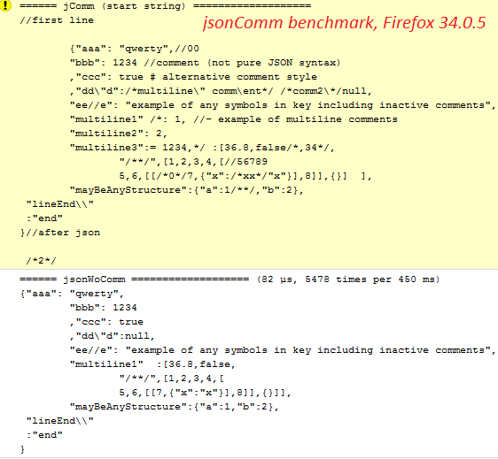
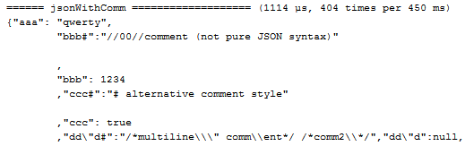
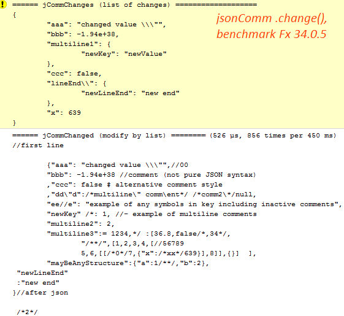

JSON with comments and change values
jsonComm format of data is multiline string format like JSON or YAML but it have single line and multiline comments.
jsonComm JS object contains methods for
- convert data to JSON string without comments
- convert to JSON with comments added before associated key-value pairs
- change of values of unique keys
- convert jsonComm string from/to Yaml or XML (TODO).
Show results of test of jsonComm string in browser: jsonCommTest.js (results will be printed in console which opened by F12).
jsonComm syntax
1) syntax of data is equal of JSON syntax;
2) syntax of comment is equal of Javascript syntax, but line comments may be leaded by "#".
Results of test of jsonComm data
1) Multiline string in jsonComm format and removing of comments:
jsonWoComm = jsonComm.unComment(jComm);

2) Save of comments in valid pair "key#":"surrounding comments":
jsonWithComm = jsonComm.comm2json(jComm);

3) Replace some keys and values by structure jCommChanges:
jCommChanged = jsonComm.change(jComm, jCommChanges);

All 3 functions are size of 2.1KB of minified code. First function have version of 1 KB of non-compressed code.
Check this string in your browser!
Contribute your developer talents in this ope source project.
© 2015, spmbt